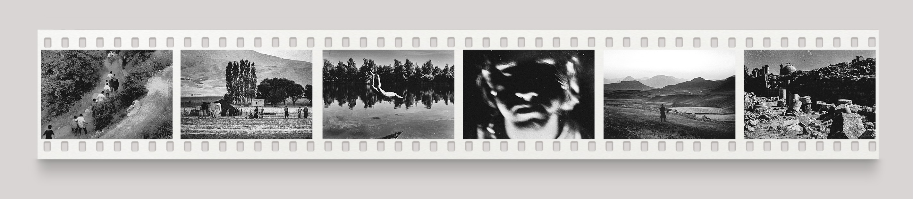

When I was forced to leave Iran, I wasn’t able to bring my best negatives with me. Many of them are gone forever, lost as my family moved to a new home. Those still there are as good as lost, because I’m unsure I can ever recover them.
The memories and excitement of shooting in Iran never leave me though. There is a different sadness and a different happiness there than in the West, and a different kind of magic, too. Those unique emotions and that magic will always be a part of my work.
Here, I want to show just a few negatives that I still have from my childhood, which were in my backpack when I emigrated.